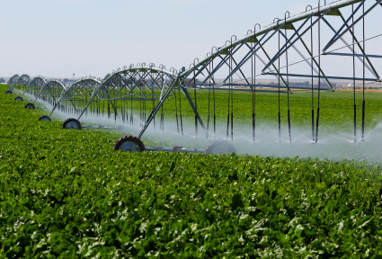
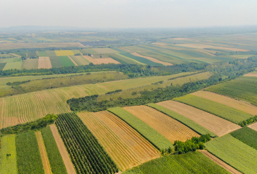
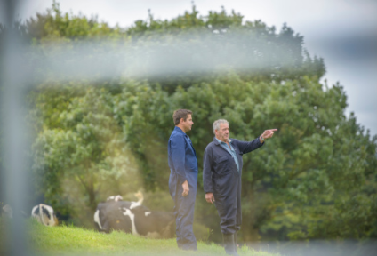
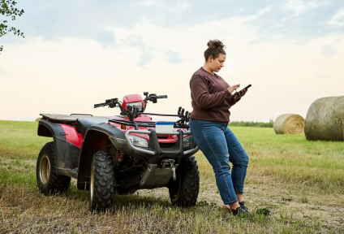
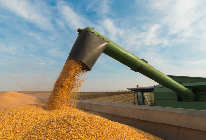
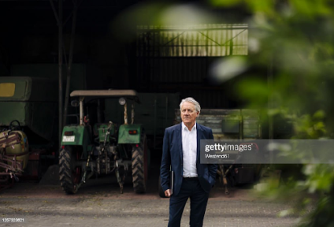

Grow smarter with a digital supply chain built for you
When it comes to modern Food & Agriculture data management, FMIS is only the beginning. CropTrak offers a flexible suite of solutions that allows us to assemble and configure a system that offers exactly what you need, with zero waste or extraneous functionality.
Field & Asset Management

Field Management Configurator

Trials Management
Field & Production Monitoring
Supply Planning & Allocation

Smart QR Data Entry
Digital Contracting

Weights, Grades & Payments

ERP Integration
Compliance & Audit Reports
ESG Survey Management
Data Insights & Analytics
